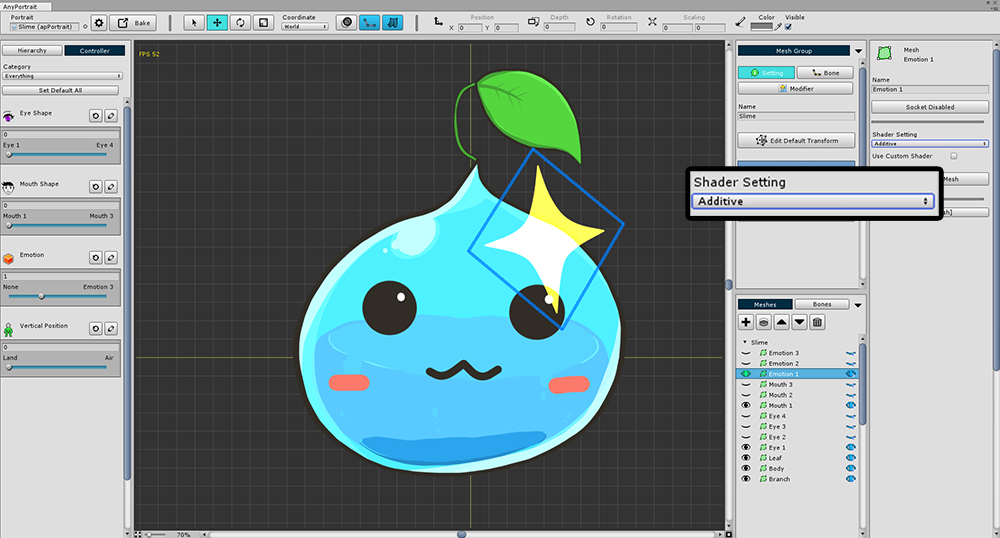
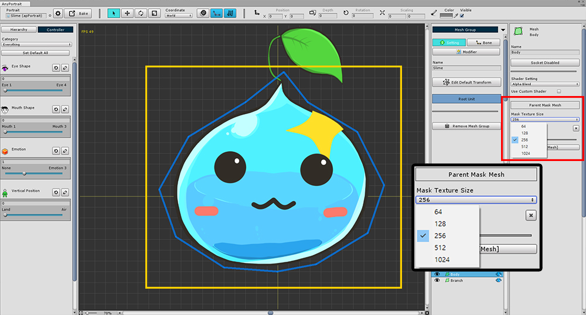
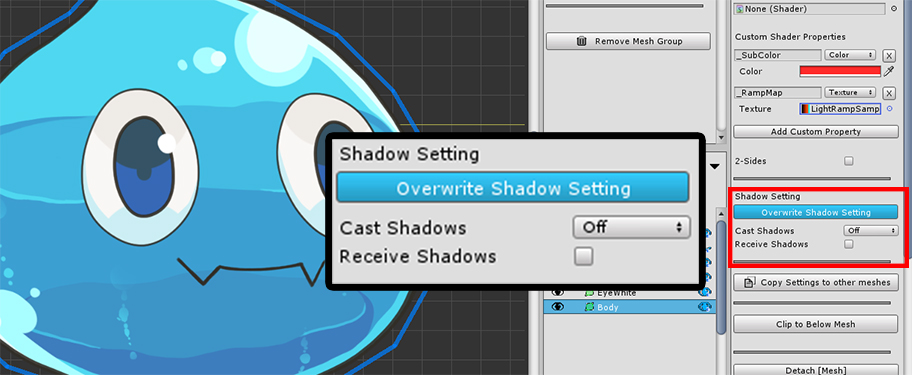
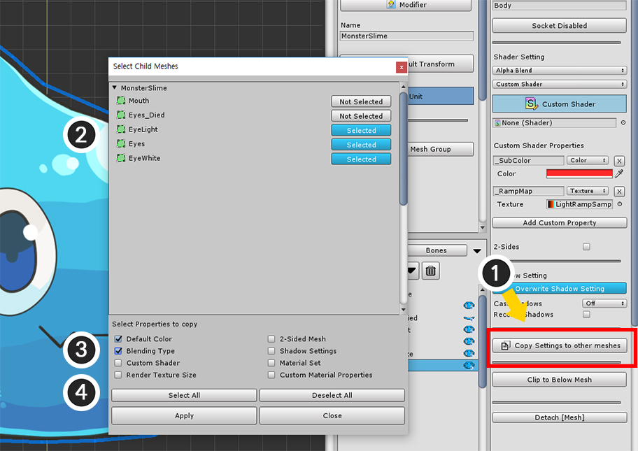

AnyPortrait > 메뉴얼 > 메시의 쉐이더(Shader) 설정
메시의 쉐이더(Shader) 설정
1.1.7

AnyPortrait에서는 기본적으로 사용되는 Alpha Blend 방식 외의 쉐이더 설정을 사용하는 기능을 제공합니다.
(1) 메시 그룹을 선택하고 Setting 탭이 선택된 상태에서 변경하고자 하는 메시를 선택합니다.
(2) Shader Setting에서 설정을 변경할 수 있습니다.
Additive, Soft Additive, Multiplicative



Alpha Blend와 더불어서 가장 많이 사용되는 Additive, Soft Additive, Multiplicative 블렌딩 옵션을 제공합니다.
이렇게 변경된 설정은 Bake 후에 씬에서도 그대로 적용이 되어서 확인할 수 있습니다.
사용자 정의 쉐이더

제공되는 쉐이더가 아닌 다른 쉐이더를 사용할 수 있습니다.
(1) Use Custom Shader에 체크를 하고, (2) 쉐이더를 선택합니다.
(쉐이더 작성법은 스크립팅 페이지에서 확인할 수 있습니다.)
에디터에서는 사용자 정의 쉐이더가 적용되지 않습니다.
확인하기 위해 씬으로 Bake를 합니다.

씬으로 Bake를 하면 설정했던 쉐이더가 적용되는 것을 확인할 수 있습니다.
클리핑(Clipping) 메시의 마스크 텍스쳐 크기

메시를 클리핑할 때, 클리핑의 마스크가 되는 메시는 "마스크 텍스쳐 크기(Mask Texture Size)" 설정을 가집니다.
게임 씬에서 클리핑 렌더링을 할 때 Render to Texture 방식으로 처리를 하는데, 이때의 크기를 의미합니다.
마스크 텍스쳐 크기가 크면 높은 품질로 클리핑 렌더링을 하며, 크기가 작다면 렌더링 부하가 적어집니다.
마스크 텍스쳐 크기값은 화면상의 픽셀 단위 크기이므로, 실행 환경의 디스플레이 크기를 고려하여 설정하면 됩니다.
v1.1.7에서의 메시 속성 UI
AnyPortrait v1.1.7에서 메시의 렌더링에 관한 많은 변화가 있습니다.
이에 따라 메시의 재질 속성에 관한 UI가 다소 변경되었습니다.
아래는 변경된 UI에 대한 설명입니다.

변경된 메시의 속성 UI 중 렌더링에 관련된 부분입니다.
(1) 블렌딩 방식을 결정합니다. Alpha Blend, Additive, Soft Additive, Multiplicative의 4가지 방식을 지원합니다.
(2) 재질 세트(Material Set)와 커스텀 쉐이더(Custom Shader)를 선택할 수 있습니다.
(3) 재질 세트를 선택했을 때의 UI입니다.
(4) 사용자가 재질의 프로퍼티의 초기값을 설정할 수 있습니다.
(5) 양면 렌더링 옵션입니다.

재질 세트 방식으로 렌더링할 때의 UI입니다.
- Use Default Material Set ON/OFF : 기본의 재질 세트를 이용할지 여부입니다.
- Change : 기본 재질 세트를 이용하지 않는 경우, 특정 재질 세트를 선택하는 버튼입니다.
- Open Material Library : 재질 세트를 관리하는 재질 라이브러리(Material Library)를 엽니다. (관련 페이지)

커스텀 쉐이더를 이용하여 렌더링할 때의 UI입니다.
외부의 쉐이더 에셋을 지정할 수 있습니다.

재질의 프로퍼티의 초기값을 지정하는 UI입니다.
재질 세트의 설정값보다 우선시되어 적용됩니다.
- Add Custom Property : 커스텀 프로퍼티 설정을 추가합니다.
- 프로퍼티의 이름, 타입, 값, 삭제 버튼 : 재질에 적용될 프로퍼티입니다. 쉐이더에 동일한 이름의 프로퍼티가 있어야 합니다.

유니티 씬에서 메시에 그림자가 어떻게 렌더링될 것인지에 대한 설정입니다.
Cast Shadows를 켜면 다른 메시에 그림자를 발생시키며, Receive Shadows를 켜면 해당 메시에 그림자가 드리워집니다.
기본적으로는 Bake 다이얼로그에서의 공통의 그림자 설정을 따릅니다. (관련 페이지)
Overwrite Shadow Setting을 켰을 때, 해당 메시만 별도로 그림자 설정이 적용됩니다.

v1.1.7에 추가된 기능입니다.
현재 선택된 메시의 속성을 다른 메시들에 일괄적으로 복사할 수 있습니다.
(1) Copy Settings to other meshes 버튼을 누르면 복사를 위한 다이얼로그가 나타납니다.
(2) 복사될 수 있는 다른 메시들이 나타나며, 여러개를 선택할 수 있습니다.
(3) 복사하고자 하는 속성입니다.
- Default Color : 모디파이어를 적용하기 전의 기본 색상
- Blending Type : 블렌딩 옵션
- Custom Shader : 커스텀 쉐이더 사용 여부와 쉐이더 에셋
- Render Texture Size : 클리핑 마스크가 되는 메시의 렌더 텍스쳐의 크기
- 2-Sided Mesh : 양면 렌더링 여부
- Shadow Settings : 그림자 설정
- Material Set : 재질 세트에 관한 설정
- Custom Material Properties : 사용자가 정의한 재질의 프로퍼티 초기값
(4) 전체 선택하거나 해제하는 버튼이 있으며, Apply 버튼을 누르면 선택한 속성이 복사되어 적용됩니다.